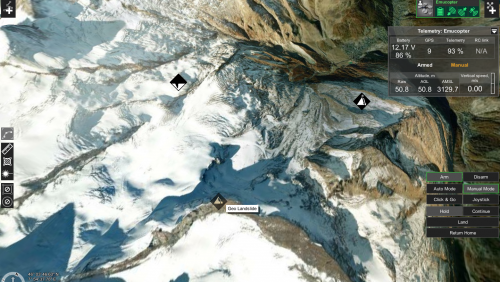

近年来，无人机市场发展迅猛。大疆公司的无人机在全球消费级无人机市场占有量超过了半壁江山，无人机飞行的门槛越来越低，应用也越来越广泛。那么，如何让无人机最大限度地发挥其价值，更好地为社会服务呢？UgCS的出现给各行各业的从业者带来了福音。
以下是选用UgCS通用地面控制站的十大理由：
无人机最早是顺应战争发展的产物。但在民用领域，无人机+行业应用才是无人机真正的刚需。众所周知，无人机的应用已经越来越广泛。随着无人机飞行门槛的降低，用户开始关心航拍数据的后期处理，使消费级无人机摆脱航模玩具的形象。
以大疆消费级无人机为例。我们可以借助手机观察到飞机传回的视频数据以及飞机上各个传感器的数据。但是如果仅仅看看视频，那还是把无人机当成了玩具。只有对无人机传回的数据进行智能分析，才能充分发挥无人机的价值。
借助于UgCS软件，我们可以获取无人机上各个传感器的数据，甚至从程序里获取到实时的视频数据，这就为后期的实时视频处理与分析提供了条件。与当今热门的深度学习技术相结合，无人机可以在各行各业发挥越来越重要的作用。
地理标记：UgCS附带了内置的地理标记工具。 该工具允许您将图像的时间戳与飞行期间记录的遥测数据同步。将坐标和正确高度的地理标记放置在图像上后，可以使用Pix4D或类似软件处理它们，以创建地图叠加层或3D模型。
视频录制：在UgCS中，您不仅可以显示来自无人机的视频数据，还可以录制。 这个视频随后可以在遥测播放器中重播。
遥测播放：所有飞行的遥测数据都记录在UgCS中。借助UgCS软件，您可以重播您的飞行。 遥测播放不仅可以播放无人机的遥测数据，还可以在飞行过程中重播无人机录制的视频。UgCS为用户在遥测数据窗口中还提供所有遥测数据的空中显示，包括电池电量、无线电连接和GPS信号质量、当前航向和航向、速度和高度等。
相机足迹：可以在UgCS中为无人机启用相机足迹选项，使您能够实时看到摄像头镜头所见的区域。根据无人机类型，这个功能可能需要额外的配置。这个功能对于工业监控、农业和许多其它应用是有用的。
UgCS全称通用地面控制站，“通用”二字的含义就是支持市面上绝大多数的无人机，如DJI、Ardupilot、PX4、InnoFlight、Mikrokopter、Microdrones、MicroPilot、Kestrel、Ar.Drone等。
多无人机支持：使用UgCS，您可以同时使用多个无人机。 更重要的是，这些无人机不一定要来自同一个制造商，因为UgCS支持许多不同类型的无人机。
对国内从事无人机设计的公司而言，如果公司具有自己的飞控软件和自己的遥控遥测协议，但是没有自己的地面站软件，也可以委托SPH公司定制UgCS软件，让UgCS支持本公司的无人机，并将本公司的Logo放到UgCS软件中。
UgCS软件有3层，从下至上分别是飞行器专用模块(VSMs – vehicle specific modules)、通用控制服务器模块(UCS – universal control server)和人控制接口(HCI – human control interface)。其中VSM就是与底层飞行器打交道的模块，目前UgCS中支持的无人机，代表SPH公司已经为该无人机开发好VSM模块。如果用户具有较强的开发能力，也有可能独立开发出与本公司飞行器相匹配的VSM，从而集成到UgCS软件中。
使用UgCS软件，用户可以方便地创建规划路径。无论是在平地还是山区，UgCS软件都可以根据用户需要，规划自己的航线。
在直观的地理环境中，只需shift键加上鼠标左右键，就可以添加航点以及对航点位置和高度进行调整。在城市还可以导入相应的建筑物模型，使路径规划更加得心应手。此外拍照测量等工具能帮助您规划3D建模路线，轻松设置旁向航向重叠、定时拍照和大地分辨率等参数，最终采集到满意的图像或视频数据。
UgCS还支持断点续飞功能。我们知道电池是无人机续航能力的一个限制因素。当无人机的航程超过了单次飞行的续航能力时，UgCS可以停止任务，更换电池后继续原来的任务。
UgCS的任务规划器配备了类似Google Earth的3D界面，用于无人机的任务规划。UgCS支持用户导入三维建筑模型，从而使任务规划可以在三维的环境下展开。如果用户使用的是免费版，则最多可以导入20个3D建筑物；如果购买的是ONE授权，则最多可以导入100个3D建筑物；如果购买的是PRO版或者ENTERPRISE版，则可以导入的3D建筑物数量不限。
对于需要倾斜建模的用户，您可以设置偏航角，调整摄像头倾斜角度，打开摄像头拍摄范围的投影，更直观地规划航线，360度无死角采集图像，建出更完善的3D模型。
当电脑连接互联网时，UgCS可以下载带地形高程数据的3D地球仪。 知道了所有航点相对于海平面的确切高度，用户就可以相对于周围的环境来规划任务。 在计算完每个飞行计划之后，您可以看到一个高度剖面图以及无人机在每个点上相对于地面和海平面的高度。
UgCS有多种不同的飞行模式。手动飞行模式使您可以像使用遥控器一样控制无人机。 一旦你创建了一个飞行计划，并将其上传到无人机，你将能够使用自动飞行模式。对于许多无人机，UgCS还支持Click＆Go和Joystick控制飞行模式。
在UgCS中，大多数无人机都支持Click＆Go飞行模式。 如果遥控不是最佳选择，但你需要无人机快速地到达某个地方，这就是最好的解决方案。用户只需点击您想要无人驾驶飞机的地图，输入所需的高度，无人机就可以飞行到指定的位置。
UgCS还支持Joystick游戏杆飞行模式。 用户可以将游戏杆插入笔记本电脑，然后通过遥测链接控制无人机。这不仅比遥控器更令人兴奋，它还让您更直观地控制无人机。
UgCS中内置有软件仿真器，固定翼emuplane和旋翼emucopter。 如果用户手上没有无人机，或者只是想在上传到真正的无人机之前测试一个路线，模拟器可以帮助您在安全的环境中发现UgCS令人兴奋的新功能。
多节点安装：UgCS软件具有模块化设计，这意味着软件的不同部分可以在不同的机器上运行。UgCS由服务器，客户端和VSM（飞行器专用模块）组成，这种结构允许你用一个中央地面站监测现场多个操作员的工作。
多操作员：由于UgCS的模块化设计，不仅可以一台计算机控制多个无人机，而且一架无人机可以连接到主地面站的多台计算机。这可以让您同时多个无人驾驶操作员，每个都由中央地面站监视指示。
2017年春节前后，杭州萧山和成都等地的机场相继发生黑飞事件，对民用航空带来了巨大的安全隐患。事件发生后，国内无人机厂商明显增强了安全防范措施。大疆为每一台无人机都配备有卫星定位模块，在全球范围内收录了超过6800座主要机场的地理坐标信息，将其预装在每台无人机产品里。以机场每条跑道两端的中点为圆心、半径最高4.5公里，各划定一个圆形区域，两个圆及两圆之间组成的近似椭圆范围，大疆将其设定为禁飞区域。无人机在禁飞区内是无法起飞的，从外部闯入禁飞区的无人机则会立即自动下降至地面。从半径为4.5公里的禁飞区边缘再向外延伸2.5公里划圆、外加跑道两端15公里延长线，设定为限飞区。无人机在限飞区内飞行，其飞行高度是受到强制限制的。
使用过大疆公司最新型无人机的用户还会发现，为了保证无人机的安全飞行，大疆公司还会根据政府需要临时设置禁飞区。以2017年12月13日的国家公祭日为例，南京市为了确保安全，从12月8日到12月14日，设置了方圆数公里的禁飞区。在国家公祭日设置临时禁飞区期间，大疆的无人机就算在室内也无法正常起飞。
禁飞区的设置有效地保证了公共安全，但是也给一些正常的科研活动带来了困扰。在保证安全的情况下，使用UgCS软件，可以突破大疆公司客户端程序设置的禁飞区，或者突破大疆公司用户终端对航点个数设置的限制，从而为用户使用无人机进行科研活动带来了方便。
与此同时，用户也可以在UgCS软件中设置自己的禁飞区，以确保本次飞行不会影响到公共安全。
3D建筑物导入：UgCS允许您导入3D建筑物的模型，并通过考虑与物体的期望的预设距离来自动计算建筑物周围的航班。
KML数据导入：KML代表Keyhole标记语言，KML数据导入允许操作员导入地标来表示地图上的重要位置。
DEM数据导入：DEM代表数字高程模型。地形会经常变化，3D地图往往不能及时更新，采石场是一个典型的例子。 如果无人机的操作员想要勘测或监视采石场并自动绘图，他将需要导入DEM数据，使其低于本来被认为是地面水平的数据。这些数据将使无人机能够靠近采石场的地面来完成任务。另一种情况是山区，运营商需要使用DEM和更精确的数据，因为普遍可用的地图提供商在地图上使用太少的高程点来规划安全任务。
地理参考图像导入：当用无人机飞行自动化任务时，精确的地图比以往任何时候都更重要。在UgCS中，可以将地理图像导入为地图叠加层，这将使您能够自定义UgCS地图以满足您的需求。
ADS-B全称是Automatic Dependent Surveillance - Broadcast，中文是广播式自动相关监视。顾名思义，即无需人工操作或者询问，可以自动地从相关机载设备获取参数向其他飞机或地面站广播飞机的位置、高度、速度、航向、识别号等信息，以供管制员对飞机状态进行监控。
ADS-B接收器：UgCS兼容ADS-B接收器，如microadsb.com。这意味着您可以将ADS-B接收机带到现场，将其连接到您的笔记本电脑，一旦识别出UgCS就会警告您有别的无人机接近。
ADS-B发送应答器/发送器：UgCS支持ADS-B发送应答器/发送器来避免空中飞行冲突。飞行ID和Squawk代码等参数可以通过UgCS设置。此功能仅适用于UgCS ENTERPRISE的用户。
对使用中文的用户而言，UgCS软件的英文界面可能是一个学习的障碍，使用和学习都不太方便。所幸的是，UgCS提供了二次开发的功能，用户完全可以调用SDK的API函数，编制自己的中文界面应用程序，控制无人机完成指定的飞行。
其实，SDK二次开发的功能远不仅仅是编制中文界面那样简单。对于各行各业使用无人机的从业者来说，每个用户都希望使用无人机来解决现实问题。那就可以针对自己的需要，使用SDK进行二次开发，让无人机帮我们按程序完成我们需要它完成的任务，如土地测量、倾斜摄影、电力巡线和农药喷洒等。
另外，很多UgCS的用户使用UgCS软件是在做系统集成。也就是说，除了使用UgCS控制无人机以外，用户还需要做很多其它有意义的工作。使用SDK，用户完全可以将UgCS完美地集成到自己的系统中。